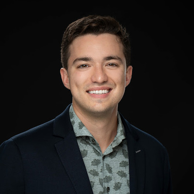
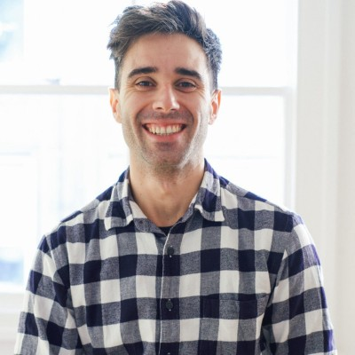

Arkanis Labs is a systems design and implementation shop. We work with VC firms, their portfolio companies, and early-stage startups to build AI infrastructure that survives contact with real users. In 2026 alone, teams we've worked with have raised over $7M USD off proof-of-concept projects we helped build.
Get in TouchWe focus on the engineering work that turns AI from a slide deck into something customers actually use. If it involves data moving through a system and a model making decisions, it's probably in our wheelhouse.
Pipelines, ETL, schema design, and the plumbing that makes everything else possible. Clean data in, useful data out. We work across warehouse platforms and build systems that don't silently rot.
Task-specific agents with structured memory, tool use, and clear accountability. Multi-agent orchestration when the problem calls for it. We build agents that do real work—not chatbots with delusions of competence.
Ranking, personalization, and discovery systems built for your specific domain. From cold-start strategies to production feedback loops that actually improve over time.
Fine-tuning, distillation, and purpose-built models deployed to environments that make sense for your constraints. We handle the full path from research code to production monitoring.
Our clients are venture-backed companies at the stage where AI is a core bet, not a side experiment. We plug in where you need us.
You need to ship an AI feature and don't have the team to build it yet. We integrate with your engineers, write production code, and help you hit the milestone that unlocks the next round.
You need technical diligence on a deal, or a portfolio company needs hands-on engineering help. We provide implementation specialists for greenfield projects and advisory support on hiring, architecture, and technical strategy.
Most AI engagements fail because the scope is wrong, not because the engineering is hard. Our process is built to catch that early and move quickly once we know the problem is real.
A focused 1–2 week period where we define the technical path and start writing code. We're typically making meaningful contributions within the first few days—not spending weeks on a strategy deck.
Concrete deliverables with clear timelines and pass/fail criteria. You know what you're getting, when you're getting it, and how to evaluate whether it works. No ambiguous "ongoing development."
For teams that need sustained support, we move into a partnership model: priority access to our engineers, ongoing strategy consultations, and the continuity of working with people who already know your systems inside out.
We hire engineers with deep system design instincts who use AI tooling as leverage—not as a substitute for understanding the problem. The kind of people who know when the model is wrong before the metrics tell them, because they've built enough systems to have intuition about how things break.
Everyone here has covered the full deployment stack, from exploratory research code to production monitoring and continuous improvement. We're pragmatic tinkerers who build for the sake of building and take genuine pride in the craft.
Architecture-first thinking. We design systems that hold up under real load and real edge cases, not just happy-path demos.
Our engineers use AI tooling to move fast without outsourcing their judgment. The tools amplify; they don't replace the thinking.
From research notebooks to production pipelines, monitoring dashboards to rollback strategies. No hand-off gaps.
Deltcho has spent over a decade building the kinds of AI systems that most companies are now trying, and often failing, to build.
He shipped one of the first customer-facing LLM products on the market years before ChatGPT, led billion-parameter model training and serving at Axonify, and built agentic legal AI at EvenUp that could reason over tens of millions of words with full audit trails.
That depth, from low-level model internals to production retrieval systems, is what lets him cut through the noise in a due diligence review. He knows what real AI IP looks like because he's built it, and he can spot a failing project early because he's been the one called in to fix them.
At Arkanis, he leads technical due diligence for VC-backed AI investments and runs project recovery for enterprises where delivery has gone sideways.

Julian spent the better part of a decade as a hands-on ML engineer and technical leader, building systems at the intersection of applied AI research and production infrastructure.
He developed DRIFT Search for Microsoft's GraphRAG project, taking it from initial research through to open source implementation, one of the most widely adopted contributions in the RAG space. He built the document intelligence engine for DARPA's ASKEM program, where a lightweight document processing system consolidated work previously spread across multiple university research groups, returning millions in budget back to the program.
He scaled self-hosted transformer inference endpoints to millions of daily requests at Bark, and alongside co-founder Deltcho, shipped some of the first GPT-2-based content generators to Fortune 500 companies in the pre-GPT API era.
At Arkanis, he brings that same bias toward building production AI systems that actually work.

Alberto has spent the better part of a decade building data and ML infrastructure across ad-tech, fintech, healthcare, and supply chain, from fraud detection models at Experian to rebuilding entire cloud pipelines (AWS → GCP) for biotech startups.
He's worked extensively with GCP, BigQuery, Kubernetes, and distributed systems like Dask, with a consistent focus on making data platforms that actually scale under real workloads.
At Arkanis Labs, he brings hands-on depth in cloud-native architecture and ML-ready data infrastructure.
Wassim is a professor of electrical and computer engineering at the University of Ottawa and a computer vision expert with deep roots in both academic research and production industry systems.
As Staff ML Engineer at Inspiren, he architects hybrid edge-cloud perception systems using depth estimation, vision foundation models, and VLMs. He's built object tracking and re-identification systems for edge analytics, sensor fusion pipelines for autonomous vehicles (lidar, thermal, 3D cameras), and ported production vision models to next-gen NPU hardware, cutting unit costs by 90%.
He holds a PhD in deep learning optimization for embedded systems.
At Arkanis, Wassim advises on the problems most teams can't touch: real-time computer vision on constrained hardware, multi-sensor perception for autonomous systems, and AI-enabled situational awareness for defence and critical infrastructure.
We'll tell you honestly whether we can help. If we can, we'll be writing code within the week. If we can't, we'll point you in the right direction.
inbox@arkanislabs.com